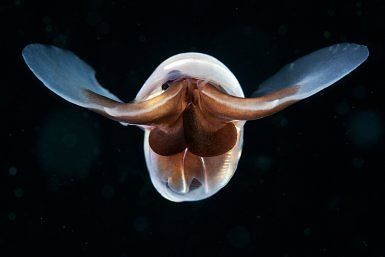
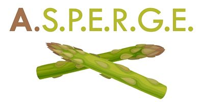

What We're Working On
- A glimpse into the diverse research projects we're leading today.
DEEP-C
Deep-sea carbonates under pressure: mechanisms of dissolution and climate feedbacks.

MANGO
Mangrove influence on lagoon eutrophication and coastal deoxygenation in Senegal.

DYNAMITE
DYNAMics of the production and export of aragonITE shells.
FORCRY
Analysing frozen Foraminifera by Cryostage LA-ICPMS: Neogene CO₂, patterns, cycles, and climate sensitivity.

Completed
ASPERGE
Aragonite at the Seafloor: a secret PlayEr in the ReGulation of Earth's climate?